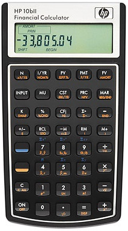

WebCal 計數機網頁
HP-10BII及HP-10BII+ 財務計算機
|  |
|
| HP 10BII | HP 10BII+ |
HP 10BII
2001年HP 惠普科技公司推出型號HP 10BII財務計算機 ，它是 單行顯示屏，顯示輸入數值及計算結果(12位)，以算式順序輸入連鎖方法(Chain mode)輸入操作(先輸入先計算)。這部計算機雖然有基本財務計算功能，但缺乏了一些科學計算功能，例如:三角函數等功能 等等。有10個數字記憶使用0-9的儲存位置，由於不是字母代號記憶， 所以能夠滿足香港考評局對准用計算機的要求，獲香港考評局接納為香港文憑試准用計算機。
HP 10BII主要功能及特點如下:
˙貨幣的時間值計算，例如: 年金及按揭計算等等。
˙利息轉換: 名義上及實際上的比率
˙商業百分率: 百分率變化，利潤率，以及邊際計算。
˙現金流量分析: 淨現值及內部回報率。
˙統計功能，包括單變量及雙變量分析(線性回歸)，可以計算平均數、標準差、相關係數及線性回歸預測值等。
˙現金流組容量為15組。
˙十個數字記憶及計算機內部使用十二位進行運算。
HP 10BII+
2011年HP 惠普科技公司推出新型號HP 10BII+財務計算機 ，基本上是舊HP 10BII的加強版本，從表面分析，它與HP 10BII相似，有20個數字記憶使用0-9及.0-.9的儲存位置，由於不是字母代號記憶， 所以能夠滿足香港考評局對准用計算機的要求，已於2012年獲香港考評局接納為香港文憑試准用計算機。
HP 10BII+除了擁有HP10BII的功能外，還新增加了下列各項的功能：
˙輸入模式除了連鎖方法(Chain mode)外，還加入了算式順序輸入(Algebraic mode)。
˙增加了不少科學函數，例如: 三角函數等，亦即是說HP 10BII是科學及財務方面兩用的計算機。
˙共有20個數值記憶(比HP10BII多10個記憶)。
˙增加了6種內置統計模式。
․較特別的是有四種統計概率函數及反函數，包括標準常態分佈概率(Standard normal distribution)、反查標準常態分佈概率(Inverse Standard normal distribution)、Stundet t-分佈概率(Stundent t distribution)、反查Stundet t-分佈概率(Inverse student t distribution)，乘階功能亦可以計算非整數及負數的情況。
˙現金流組容量除了基本15組預留外，還可以額外增加30組(與統計數據共用)。
˙可保留輸入統計數據(基本15組數據，另加30組數據(與現金流數據共用))，方便之後查閱及修改數據。
˙增加了日期計算。
˙增加了折舊計算。
˙增加了損益分析。
˙增加了債券計算。